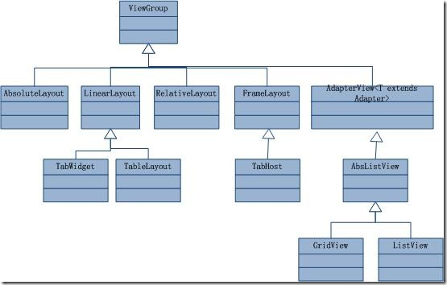
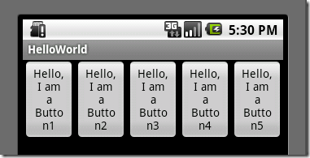
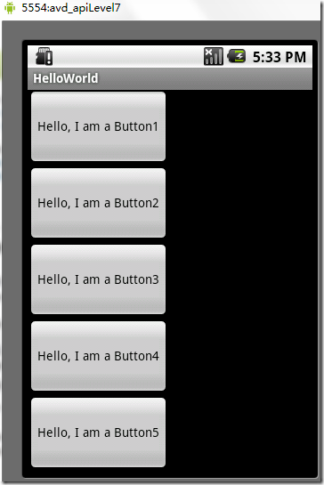
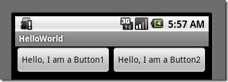
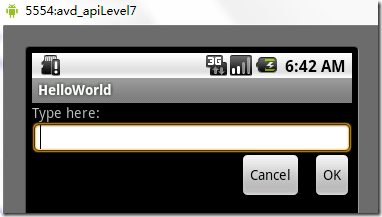
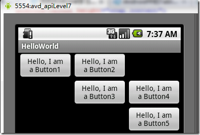
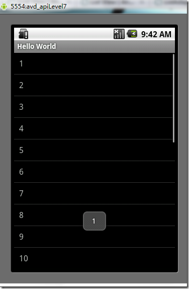
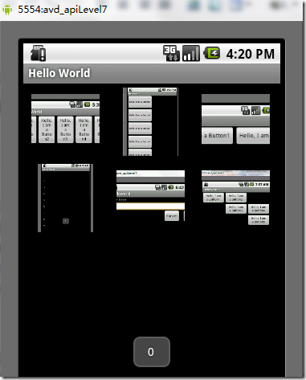
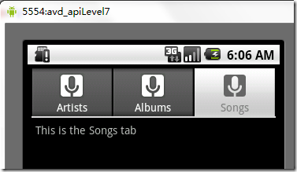

Android 开发之旅：view的几种布局方式及实践
引言
通过前面两篇：
Android 开发之旅：又见Hello World！
Android 开发之旅：深入分析布局文件&又是“Hello World！”
我们对Android应用程序运行原理及布局文件可谓有了比较深刻的认识和理解，并且用“Hello World！”程序来实践证明了。在继续深入Android开发之旅之前，有必要解决前两篇中没有介绍的遗留问题：View的几种布局显示方法，以后就不会在针对布局方面做过多的介绍。View的布局显示方式有下面几种：线性布局（Linear Layout）、相对布局（Relative Layout）、表格布局（Table Layout）、网格视图（Grid View）、标签布局（Tab Layout）、列表视图（List View）、绝对布局（AbsoluteLayout）。本文虽然是介绍View的布局方式，但不仅仅是这样，其中涉及了很多小的知识点，绝对能给你带来Android大餐！
本文的主要内容就是分别介绍以上视图的七种布局显示方式效果及实现，大纲如下：
1、View布局概述2、线性布局（Linear Layout）
2.1、Tips：android:layout_weight="1"
3、相对布局（Relative Layout）
4、表格布局（Table Layout）
5、列表视图（List View）
5.1、一个小的改进
5.2、补充说明
6、网格视图（Grid View）
7 、绝对布局（）
8、标签布局（Tab Layout）
1、view的布局显示概述
通过前面的学习我们知道：在一个Android应用程序中，用户界面通过View和ViewGroup对象构建。Android中有很多种View和ViewGroup，他们都继承自View类。View对象是Android平台上表示用户界面的基本单元。
View的布局显示方式直接影响用户界面，View的布局方式是指一组View元素如何布局，准确的说是一个ViewGroup中包含的一些View怎么样布局。ViewGroup类是布局（layout）和视图容器（View container）的基类，此类也定义了ViewGroup.LayoutParams类，它作为布局参数的基类，此类告诉父视图其中的子视图想如何显示。例如，XML布局文件中名为layout_something的属性（参加上篇的4.2节）。我们要介绍的View的布局方式的类，都是直接或间接继承自ViewGroup类，如下图所示：

图1、继承自ViewGroup的一些布局类
其实，所有的布局方式都可以归类为ViewGroup的5个类别，即ViewGroup的5个直接子类。其它的一些布局都扩展自这5个类。下面分小节分别介绍View的七种布局显示方式。
2、线性布局（Linear Layout）
线性布局：是一个ViewGroup以线性方向显示它的子视图（view）元素，即垂直地或水平地。之前我们的Hello World！程序中view的布局方式就是线性布局的，一定不陌生！如下所示res/layour/main.xml：
<?xml version="1.0" encoding="utf-8"?><LinearLayout xmlns:android="http://schemas.android.com/apk/res/android
android:layout_width="fill_parent
android:layout_height="fill_parent
android:orientation="horizontal" > <!-- have an eye on ! -->
<Button
android:id="@+id/button1
android:layout_width="wrap_content
android:layout_height="wrap_content
android:layout_weight="1
android:text="Hello, I am a Button1" />
<Button
android:id="@+id/button2
android:layout_width="wrap_content
android:layout_height="wrap_content
android:layout_weight="1
android:text="Hello, I am a Button2" />
<Button
android:id="@+id/button3
android:layout_width="wrap_content
android:layout_height="wrap_content
android:layout_weight="1
android:text="Hello, I am a Button3" />
<Button
android:id="@+id/button4
android:layout_width="wrap_content
android:layout_height="wrap_content
android:layout_weight="1
android:text="Hello, I am a Button4" />
<Button
android:id="@+id/button5
android:layout_width="wrap_content
android:layout_height="wrap_content
android:layout_weight="1
android:text="Hello, I am a Button5" />
</LinearLayout>
从上面可以看出根LinearLayout视图组（ViewGroup）包含5个Button，它的子元素是以线性方式（horizontal，水平的）布局，运行效果如下图所示：

图2、线性布局（水平或者说是横向）
如果你在android:orientation="horizontal"设置为vertical，则是是垂直或者说是纵向的，如下图所示：

图3、线性布局（垂直或者说是纵向）
2.1、Tips：android:layout_weight="1"
这个属性很关键，如果你没有显示设置它，它默认为0。把上面布局文件（水平显示的那个）中的这个属性都去掉，运行会得出如下结果：

图4、layout_weight属性
没有了这个属性，我们本来定义的5个Button运行后却只显示了2个Button，为什么呢？？
"weight"顾名思义是权重的意思，layout_weight用于给一个线性布局中的诸多视图的重要程度赋值。所有的视图都有一个layout_weight值，默认为零，意思是需要显示多大的视图就占据多大的屏幕空间。这就不难解释为什么会造成上面的情况了：Button1~Button5都设置了layout_height和layout_width属性为wrap_content即包住文字内容，他们都没有设置layout_weight属性，即默认为0.，这样Button1和Button2根据需要的内容占据了整个屏幕，别的就显示不了啦！
若赋一个高于零的值，则将父视图中的可用空间分割，分割大小具体取决于每一个视图的layout_weight值以及该值在当前屏幕布局的整体layout_weight值和在其它视图屏幕布局的layout_weight值中所占的比率而定。举个例子：比如说我们在水平方向上有一个文本标签和两个文本编辑元素。该文本标签并无指定layout_weight值，所以它将占据需要提供的最少空间。如果两个文本编辑元素每一个的layout_weight值都设置为1，则两者平分在父视图布局剩余的宽度(因为我们声明这两者的重要度相等)。如果两个文本编辑元素其中第一个的layout_weight值设置为1，而第二个的设置为2，则剩余空间的三分之二分给第一个，三分之一分给第二个(数值越小，重要度越高)。
3、相对布局（Relative Layout）
相对布局：是一个ViewGroup以相对位置显示它的子视图（view）元素，一个视图可以指定相对于它的兄弟视图的位置（例如在给定视图的左边或者下面）或相对于RelativeLayout的特定区域的位置（例如底部对齐，或中间偏左）。
相对布局是设计用户界面的有力工具，因为它消除了嵌套视图组。如果你发现你使用了多个嵌套的LinearLayout视图组后，你可以考虑使用一个RelativeLayout视图组了。看下面的res/layour/main.xml：
<?xml version="1.0" encoding="utf-8"?><RelativeLayout xmlns:android="http://schemas.android.com/apk/res/android
android:layout_width="fill_parent
android:layout_height="fill_parent" >
<TextView
android:id="@+id/label
android:layout_width="fill_parent
android:layout_height="wrap_content
android:text="Type here:" />
<EditText
android:id="@+id/entry
android:layout_width="fill_parent
android:layout_height="wrap_content
android:layout_below="@id/label <!-- have an eye on ! -->
android:background="@android:drawable/editbox_background" />
<Button
android:id="@+id/ok
android:layout_width="wrap_content
android:layout_height="wrap_content
android:layout_alignParentRight="true <!-- have an eye on ! -->
android:layout_below="@id/entry <!-- have an eye on ! -->
android:layout_marginLeft="10dip
android:text="OK" />
<Button
android:layout_width="wrap_content
android:layout_height="wrap_content
android:layout_alignTop="@id/ok <!-- have an eye on ! -->
android:layout_toLeftOf="@id/ok <!-- have an eye on ! -->
android:text="Cancel" />
</RelativeLayout>
从上面的布局文件我们知道，RelativeLayout视图组包含一个TextView、一个EditView、两个Button，注意标记了（请注意运行代码的时候，请把这些注释去掉，否则会运行出错，上面加上是为了更加醒目！）的属性，在使用相对布局方式中就是使用这些类似的属性来定位视图到你想要的位置，它们的值是你参照的视图的id。这些属性的意思很简单，就是英文单词的直译，就不多做介绍了。运行之后，得如下结果：

图5、相对布局
4、 表格布局（Table Layout）
表格布局：是一个ViewGroup以表格显示它的子视图（view）元素，即行和列标识一个视图的位置。其实Android的表格布局跟HTML中的表格布局非常类似，TableRow就像HTML表格的tr<标记。
用表格布局需要知道以下几点：
android:shrinkColumns，对应的方法：setShrinkAllColumns(boolean)，作用：设置表格的列是否收缩（列编号从0开始，下同），多列用逗号隔开（下同），如android:shrinkColumns="0,1,2"，即表格的第1、2、3列的内容是收缩的以适合屏幕，不会挤出屏幕。
android:collapseColumns，对应的方法：setColumnCollapsed(int,boolean)，作用：设置表格的列是否隐藏android:stretchColumns，对应的方法：setStretchAllColumns(boolean)，作用：设置表格的列是否拉伸
看下面的res/layour/main.xml：
<?xml version="1.0" encoding="utf-8"?><TableLayout xmlns:android="http://schemas.android.com/apk/res/android
android:layout_width="fill_parent
android:layout_height="fill_parent
android:shrinkColumns="0,1,2" > <!-- have an eye on ! -->
<TableRow> <!-- row1 -->
<Button
android:id="@+id/button1
android:layout_width="wrap_content
android:layout_height="wrap_content
android:layout_column="0
android:text="Hello, I am a Button1" />
<Button
android:id="@+id/button2
android:layout_width="wrap_content
android:layout_height="wrap_content
android:layout_column="1
android:text="Hello, I am a Button2" />
</TableRow>
<TableRow> <!-- row2 -->
<Button
android:id="@+id/button3
android:layout_width="wrap_content
android:layout_height="wrap_content
android:layout_column="1
android:text="Hello, I am a Button3" />
<Button
android:id="@+id/button4
android:layout_width="wrap_content
android:layout_height="wrap_content
android:layout_column="1
android:text="Hello, I am a Button4" />
</TableRow>
<TableRow>
<Button
android:id="@+id/button5
android:layout_width="wrap_content
android:layout_height="wrap_content
android:layout_column="2
android:text="Hello, I am a Button5" />
</TableRow>
</TableLayout>
运行之后可以得出下面的结果：

图6、表格布局
5、列表视图（List View）
列表布局：是一个ViewGroup以列表显示它的子视图（view）元素，列表是可滚动的列表。列表元素通过ListAdapter自动插入到列表。
ListAdapter：扩展自Adapter，它是ListView和数据列表之间的桥梁。ListView可以显示任何包装在ListAdapter中的数据。该类提供两个公有类型的抽象方法：
1、public abstract boolean areAllItemsEnabled () ：表示ListAdapter中的所有元素是否可激活的？如果返回真，即所有的元素是可选择的即可点击的。
2、public abstract boolean isEnabled (int position) ：判断指定位置的元素是否可激活的？
下面通过一个例子来，创建一个可滚动的列表，并从一个字符串数组读取列表元素。当一个元素被选择时，显示该元素在列表中的位置的消息。
1)、首先，将res/layour/main.xml的内容置为如下：
<?xml version="1.0" encoding="utf-8"?><TextView xmlns:android="http://schemas.android.com/apk/res/android"
android:layout_width="fill_parent"
android:layout_height="fill_parent"
android:padding="10dp"
android:textSize="16sp" >
</TextView>
这样就定义了元素在列表中的布局。
2)、src/skynet.com.cnblogs.www/HelloWorld.java文件的代码如下：
import android.app.ListActivity;import android.os.Bundle;
import android.view.View;
import android.widget.AdapterView;
import android.widget.ArrayAdapter;
import android.widget.ListView;
import android.widget.TextView;
import android.widget.Toast;
import android.widget.AdapterView.OnItemClickListener;
public class HelloWorld extends ListActivity {
// 注意这里Helloworld类不是扩展自Acitvity，而是扩展自ListAcitivty
@Override
public void onCreate(Bundle savedInstanceState) {
super.onCreate(savedInstanceState);
setListAdapter(new ArrayAdapter<String>(this, R.layout.main, COUNTRIES));
ListView lv = getListView();
lv.setTextFilterEnabled(true);
lv.setOnItemClickListener(new OnItemClickListener() {
public void onItemClick(AdapterView<?> parent, View view,
int position, long id) {
// When clicked, show a toast with the TextView text
Toast.makeText(getApplicationContext(),
((TextView) view).getText(), Toast.LENGTH_SHORT).show();
}
});
}
static final String[] COUNTRIES = new String[] { "1", "2", "3", "4", "5",
"6", "7", "8", "9", "10", "11", "12", "13", "14", "15", "16", "17",
"18", "19", "20", "21", "22", "23", "24" };
}
Note：onCreate()函数中并不像往常一样通过setContentView()为活动（Activity）加载布局文件，替代的是通过setListAdapter(ListAdapter)自动添加一个ListView填充整个屏幕的ListActivity。在此文件中这个方法以一个ArrayAdapter为参数：setListAdapter(new ArrayAdapter(this,R.layout.main,COUNTRIES))，这个ArrayAdapter管理填入ListView中的列表元素。ArrayAdapter的构造函数的参数为：this（表示应用程序的上下文context）、表示ListViewde布局文件（这里是R.layout.main）、插入ListView的List对象对数组（这里是COUNTRES）。
setOnItemClickListener(OnItemClickListener)定义了每个元素的点击（on-click）的监听器，当ListView中的元素被点击时，onItemClick()方法被调用，在这里是即一个Toast消息——每个元素的位置将显示。
3)、运行应用程序得如下结果（点击1之后，在下面显示了1）：

图7、列表布局
NOTE:如果你改了HelloWorld extendsListActivity 而不是Activity之后，运行程序是提示：“Conversion to Dalvik format failed with error 1”。可以这么解决：解决办法是 Project < Clean... < Clean project selected below < Ok
5.1、一个小的改进
上面我们是把要填充到ListView中的元素硬编码到HelloWorld.java文件中，这样就缺乏灵活性！也不符合推荐的应用程序的界面与控制它行为的代码更好地分离的准则！
其实我们可以把要填充到ListView的元素写到res/values/strings.xml文件中的元素中，然后再源码中动态地读取。这样strings.xml的内容类似下面：
<?xml version="1.0" encoding="utf-8"?><resources>
<string-array name="countries_array">
<item>1</item>
<item>2</item>
<item>3</item>
<item>4</item>
<item>5</item>
<item>6</item>
<item>7</item>
</string-array>
</resources>
然而HelloWorld.java文件中的onCreate()函数，则这样动态访问这个数组及填充到ListVies：
String[] countries = getResources().getStringArray(R.array.countries_array);setListAdapter(new ArrayAdapter(this, R.layout.list_item, countries));
5.2、补充说明
首先总结一下列表布局的关键部分：
1、布局文件中定义ListView。
2、Adapter用来将数据填充到ListView。
3、要填充到ListView的数据，这些数据可以字符串、图片、控件等等。
其中Adapter是ListView和数据源之间的桥梁，根据数据源的不同Adapter可以分为三类：
String[]: ArrayAdapterList<Map<String,?>>: SimpleAdapter
数据库Cursor: SimpleCursorAdapter
使用ArrayAdapter（数组适配器）顾名思义，需要把数据放入一个数组以便显示，上面的例子就是这样的；SimpleAdapter能定义各种各样的布局出来，可以放上ImageView（图片），还可以放上Button（按钮），CheckBox（复选框）等等；SimpleCursorAdapter是和数据库有关的东西。篇幅有限后面两种就不举例实践了。
6、网格视图（Grid View）
网格布局：是一个ViewGroup以网格显示它的子视图（view）元素，即二维的、滚动的网格。网格元素通过ListAdapter自动插入到网格。ListAdapter跟上面的列表布局是一样的，这里就不重复累述了。
下面也通过一个例子来，创建一个显示图片缩略图的网格。当一个元素被选择时，显示该元素在列表中的位置的消息。
1)、首先，将上面实践截取的图片放入res/drawable/
2)、res/layour/main.xml的内容置为如下：这个GridView填满整个屏幕，而且它的属性都很好理解，按英文单词的意思就对了。
<?xml version="1.0" encoding="utf-8"?><GridView xmlns:android="http://schemas.android.com/apk/res/android"
android:id="@+id/gridview
android:layout_width="fill_parent"
android:layout_height="fill_parent
android:columnWidth="90dp
android:numColumns="auto_fit
android:verticalSpacing="10dp
android:horizontalSpacing="10dp
android:stretchMode="columnWidth
android:gravity="center
/>
3)、然后，HelloWorld.java文件中onCreate()函数如下：
public void onCreate(Bundle savedInstanceState) { super.onCreate(savedInstanceState);
setContentView(R.layout.main);
GridView gridview = (GridView) findViewById(R.id.gridview);
gridview.setAdapter(new ImageAdapter(this));
gridview.setOnItemClickListener(new OnItemClickListener() {
public void onItemClick(AdapterView<?> parent, View v,
int position, long id) {
Toast.makeText(HelloWorld.this, " " + position,
Toast.LENGTH_SHORT).show();
}
});
}
onCreate()函数跟通常一样，首先调用超类的onCreate()函数函数，然后通过setContentView()为活动（Activity）加载布局文件。紧接着是，通过GridView的id获取布局文件中的gridview，然后调用它的setListAdapter(ListAdapter)函数填充它，它的参数是一个我们自定义的ImageAdapter。后面的工作跟列表布局中一样，为监听网格中的元素被点击的事件而做的工作。
4)、实现我们自定义ImageAdapter，新添加一个类文件，它的代码如下：
import android.content.Context;import android.view.View;
import android.view.ViewGroup;
import android.widget.BaseAdapter;
import android.widget.GridView;
import android.widget.ImageView;
public class ImageAdapter extends BaseAdapter {
private Context mContext;
public ImageAdapter(Context c) {
mContext = c;
}
public int getCount() {
return mThumbIds.length;
}
public Object getItem(int position) {
return null;
}
public long getItemId(int position) {
return 0;
}
// create a new ImageView for each item referenced by the Adapter
public View getView(int position, View convertView, ViewGroup parent) {
ImageView imageView;
// if it's not recycled, initialize some attributes
if (convertView == null) {
imageView = new ImageView(mContext);
imageView.setLayoutParams(new GridView.LayoutParams(85, 85));
imageView.setScaleType(ImageView.ScaleType.CENTER_CROP);
imageView.setPadding(8, 8, 8, 8);
} else {
imageView = (ImageView) convertView;
}
imageView.setImageResource(mThumbIds[position]);
return imageView;
}
// references to our images
private Integer[] mThumbIds = { R.drawable.linearlayout1,
R.drawable.linearlayout2, R.drawable.linearlayout3,
R.drawable.listview, R.drawable.relativelayout,
R.drawable.tablelayout };
}
ImageAdapter类扩展自BaseAdapter，所以首先得实现它所要求必须实现的方法。构造函数和getcount()函数很好理解，而getItem(int)应该返回实际对象在适配器中的特定位置，但是这里我们不需要。类似地，getItemId(int)应该返回元素的行号，但是这里也不需要。
这里重点要介绍的是getView()方法，它为每个要添加到ImageAdapter的图片都创建了一个新的View。当调用这个方法时，一个View是循环再用的，因此要确认对象是否为空。如果是空的话，一个ImageView就被实例化且配置想要的显示属性：
1、setLayoutParams(ViewGroup.LayoutParams)：设置View的高度和宽度，这确保不管drawable中图片的大小，每个图片都被重新设置大小且剪裁以适应这些尺寸。
2、setScaleType(ImageView.ScaleType)：声明图片应该向中心剪裁（如果需要的话）。
3、setPadding(int, int, int, int)：定义补距，如果图片有不同的横纵比，小的补距将导致更多的剪裁以适合设置的ImageView的高度和宽度。
如果View传到getView()不是空的，则本地的ImageView初始化时将循环再用View对象。在getView()方法末尾，position整数传入setImageResource()方法以从mThumbIds数组中选择图片。
运行程序会得到如下结果（点击第一张图片之后）：

图8、网格布局
7、绝对布局（AbsoluteLayout）
绝对布局：是一个ViewGroup以绝对方式显示它的子视图（view）元素，即以坐标的方式来定位在屏幕上位置。
这种布局方式很好理解，在布局文件或编程地设置View的坐标，从而绝对地定位。如下所示布局文件：
<AbsoluteLayout xmlns:android="http://schemas.android.com/apk/res/android"android:id="@+id/AbsoluteLayout01"
android:layout_width="fill_parent"
android:layout_height="fill_parent"
>
<TextView android:id="@+id/txtIntro
android:text="??????
android:layout_width="fill_parent
android:layout_height="wrap_content
android:layout_x="20dip"<!-- have an eye on ! -->
android:layout_y="20dip"><!-- have an eye on ! -->
</TextView>
</AbsoluteLayout>
简单吧，这里不在深入了！
8、标签布局（Tab Layout）
标签布局：是一个ViewGroup以标签的方式显示它的子视图（view）元素，就像在Firefox中的一个窗口中显示多个网页一样。
为了狂创建一个标签UI（tabbed UI），需要使用到TabHost和TabWidget。TabHost必须是布局的根节点，它包含为了显示标签的TabWidget和显示标签内容的FrameLayout。
可以有两种方式实现标签内容：使用标签在同一个活动中交换视图、使用标签在完全隔离的活动之间改变。根据你的需要，选择不同的方式，但是如果每个标签提供不同的用户活动，为每个标签选择隔离的活动，因此你可以更好地以分离的组管理应用程序，而不是一个巨大的应用程序和布局。下面还有一个例子来创建一个标签UI，每个标签使用隔离的活动。
1)、在项目中建立三个隔离的Activity类：ArtistisActivity、AlbumActivity、SongActivity。它们每个表示一个分隔的标签。每个通过TextView显示简单的一个消息，例如：
public class ArtistsActivity extends Activity { public void onCreate(Bundle savedInstanceState) {
super.onCreate(savedInstanceState);
TextView textview = new TextView(this);
textview.setText("This is the Artists tab");
setContentView(textview);
}
}
其它两个类也类似。
2)、设置每个标签的图标，每个图标应该有两个版本：一个是选中时的，一个是未选中时的。通常的设计建议是，选中的图标应该是深色（灰色），未选中的图标是浅色（白色）。
现在创建一个state-list drawable指定哪个图标表示标签的状态：将图片放到res/drawable目录下并创建一个新的XML文件命名为ic_tab_artists.xml，内容如下：
<?xml version="1.0" encoding="utf-8"?><selector xmlns:android="http://schemas.android.com/apk/res/android">
<!-- When selected, use grey -->
<item android:drawable="@drawable/ic_tab_artists_grey
android:state_selected="true" />
<!-- When not selected, use white-->
<item android:drawable="@drawable/ic_tab_artists_white" />
</selector>
3)、res/layour/main.xml的内容置为如下：
<?xml version="1.0" encoding="utf-8"?><TabHost xmlns:android="http://schemas.android.com/apk/res/android
android:id="@android:id/tabhost
android:layout_width="fill_parent
android:layout_height="fill_parent">
<LinearLayout
android:orientation="vertical
android:layout_width="fill_parent
android:layout_height="fill_parent
android:padding="5dp">
<TabWidget
android:id="@android:id/tabs
android:layout_width="fill_parent
android:layout_height="wrap_content" />
<FrameLayout
android:id="@android:id/tabcontent
android:layout_width="fill_parent
android:layout_height="fill_parent
android:padding="5dp" />
</LinearLayout>
</TabHost>
这个布局将显示标签和提供上面创建的活动之间的导航。TabHost要求包含一个TabWidget和一个FrameLayout。TabWidget和FrameLayoutTabHost以线性垂直地显示。
4)、HelloWorld.java文件源码如下：
import android.widget.TabHost;import android.app.TabActivity;
import android.content.Intent;
import android.content.res.Resources;
import android.os.Bundle;
public class HelloWorld extends TabActivity {
/** Called when the activity is first created. */
@Override
public void onCreate(Bundle savedInstanceState) {
super.onCreate(savedInstanceState);
setContentView(R.layout.main);
Resources res = getResources(); // Resource object to get Drawables
TabHost tabHost = getTabHost(); // The activity TabHost
TabHost.TabSpec spec; // Resusable TabSpec for each tab
Intent intent; // Reusable Intent for each tab
// Create an Intent to launch an Activity for the tab (to be reused)
intent = new Intent().setClass(this, ArtistsActivity.class);
// Initialize a TabSpec for each tab and add it to the TabHost
spec = tabHost
.newTabSpec("artists")
.setIndicator("Artists",
res.getDrawable(R.drawable.ic_tab_artists))
.setContent(intent);
tabHost.addTab(spec);
// Do the same for the other tabs
intent = new Intent().setClass(this, AlbumsActivity.class);
spec = tabHost
.newTabSpec("albums")
.setIndicator("Albums",
res.getDrawable(R.drawable.ic_tab_artists))
.setContent(intent);
tabHost.addTab(spec);
intent = new Intent().setClass(this, SongsActivity.class);
spec = tabHost
.newTabSpec("songs")
.setIndicator("Songs",
res.getDrawable(R.drawable.ic_tab_artists))
.setContent(intent);
tabHost.addTab(spec);
tabHost.setCurrentTab(2);
}
}
设置每个标签的文字和图标，并分配每个标签一个活动（这里为了方便三个标签都有相同的图标）。TabHost的引用第一次通过getTabHost()获取。然后，为每个标签，创建TabHost.TabSpec定义标签的属性。newTabSpec(String)方法创建一个新的TabHost.TabSpec以给定的字符串标识标签。调用TabHost.TabSpec,setIndicator(CharSequence,Drawable)为每个标签设置文字和图标，调用setContent(Intent)指定Intent去打开合适的活动。每个TabHost.TabSpec通过调用addTab(TabHost.TabSpec)添加到TabHost。
最后，setCurrentTab(int)设置打开默认显示的标签，通过索引标签的位置。
5)、打开Android的清单文件AndroidManifest.xml，添加NoTitleBar主题到HelloWorld的标记。这将移除默认应用程序的标题和顶端布局，给标签腾出位置。标记应该像这样：
<activity android:name=".HelloWorldandroid:label="@string/app_name
android:theme="@android:style/Theme.NoTitleBar">
你运行这个程序能够得到什么结果呢？请自行检查。不过我在这里告诉你很有可能会运行不了，报“java.lang.NullPointerException”错！我想运行这个例子的很多人都会有这个问题，不信你试试！
PS：其实这也算是Android的一个bug，而且这个bug在2.2中还没有解决，这个问题全球N多人都碰到了，并在http://code.google.com/p/android/issues中挂号了，相关问题的编号有不止一个。
接着往下看……
如果你看了我这篇文章，你一定会是个幸运儿！经过我艰苦的调试+找资料，我找到了解决方法：
在清单文件AndroidManifest.xml，添加下面三个Activity：
<activity android:name=".AlbumsActivity" android:label="@string/app_name"></activity><activity android:name=".ArtistsActivity" android:label="@string/app_name"></activity>
<activity android:name=".SongsActivity" android:label="@string/app_name"></activity>
现在运行可以看到如下结果：

图9、标签布局